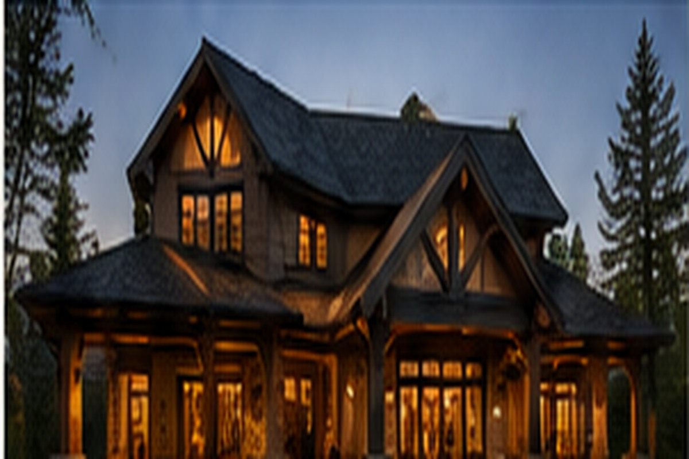
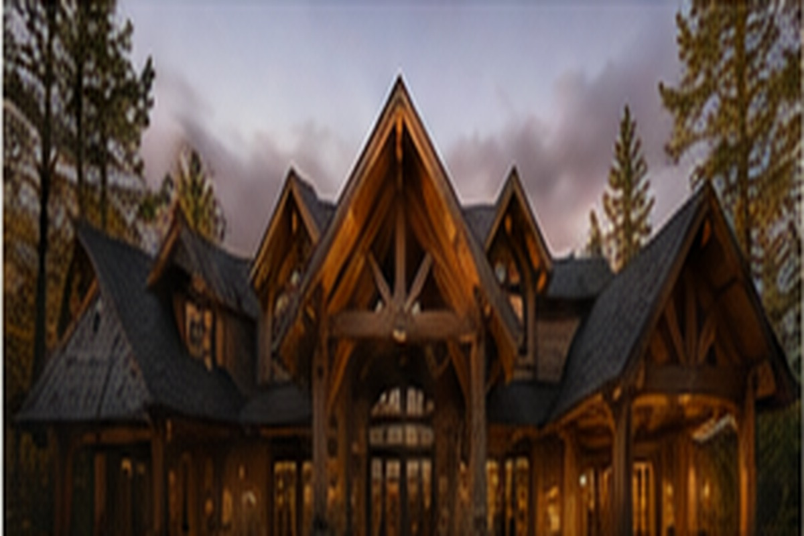
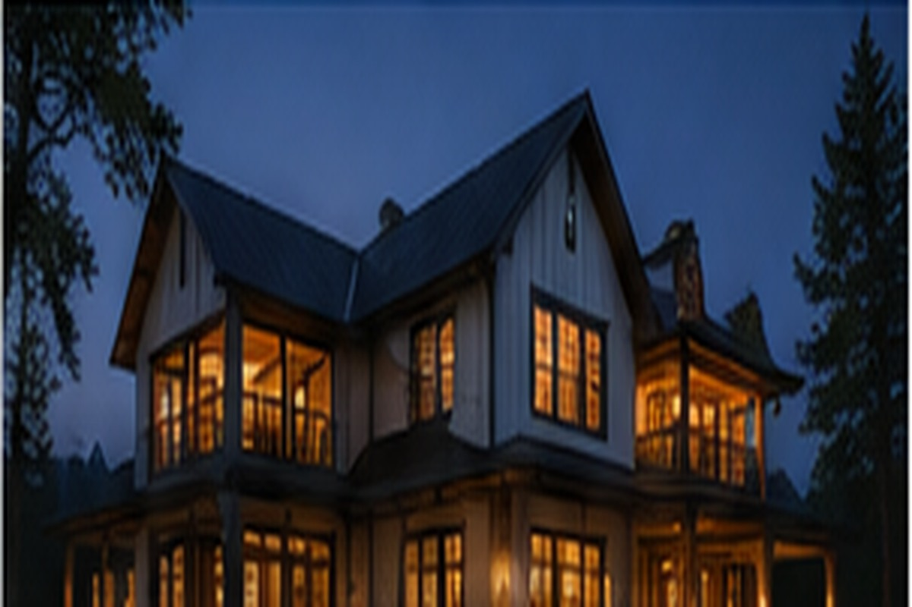

New Construction
Purposeful homes designed to fit the land, the family, and the years ahead.
Our Work
We bring the same care to every project: thoughtful planning, honest craftsmanship, and a finished result the homeowner is proud to live with.
Custom Homes
A custom home should feel intentional from the driveway to the final detail. We help turn a collection of ideas into one cohesive home—balancing flow, materials, comfort, durability, and character.
Our long-term direction is clear: build distinctive forever homes for families who appreciate craftsmanship and value a builder’s experience.

Purposeful homes designed to fit the land, the family, and the years ahead.

Transforming existing spaces while respecting what already makes the home special.

Coordinated construction, mechanical expertise, and problem-solving from start to finish.
Real Portfolio Coming Next
This version is structured so you can add real project stories and photo galleries as soon as the images are ready. Each home can have its own page with the vision, challenges, materials, progress, and finished result.